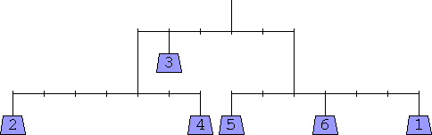
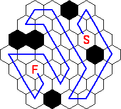
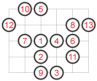
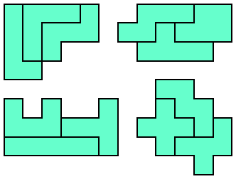

Answers to 2006 U.S. Championship Puzzles
1. Warm-Up
66 (these are the largest numbers spelled with 3, 4, 5, 6, 7, and 8 letters)
2. Slide Weights

3. Hex House

4. Distance

5. Pentomino Puddles
